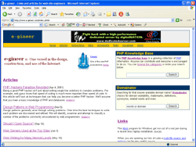

Version 2: 2005 to present
A blog, focused on the challenge of simplifying enterprise IT (&
burgers).
Version 1: 1999 to 2005

Focused on web infrastructure, e-gineer was frequently updated from 1999 to
2001. It became the home for many interesting tools including Domainator
domain name search and the PHP knowledge base which later grew into
FAQTs.com. e-gineer was largely unchanged
from 2001 to 2005 as Nathan was busy concentrating on the growth of Synop.
Articles
Instructions
-
Notebooks:
IBM Thinkpad X22.
-
Databases:
Installing Oracle 9i on Linux,
Installing Oracle 8.0.5 on Red Hat Linux 5.x,
Installing MySQL 3.x.x on Linux,
Installing MySQL 3.x.x from Source on Linux,
Starting MySQL Automatically on Red Hat Linux.
-
Apache:
Installing Apache 1.x.x on Linux,
Starting and Stopping Apache Automatically on Red Hat Linux,
Installing Apache 1.x.x on Windows 9x,
Installing Frontpage Extensions for Apache on Linux.
-
PHP:
Installing PHP 3.x.x for Apache 1.x.x on Linux,
Installing PHP 4.x for Apache 1.x.x on Linux,
Install PHP 3.x.x from CVS Source for Apache 1.x.x on Linux,
Installing PHP Scripting on Red Hat Linux 5.x,
Installing IMAP 4.x for PHP 3.0.x with Apache 1.3.x on Red Hat Linux
5.x,
Installing IMP 2.0.x for PHP 3.0.x with Apache 1.3.x on Red Hat Linux
5.x,
Installing GD 1.3 for PHP with Apache on Linux,
Installing IBM DB2 for PHP 4.x with Apache 1.3.x on Linux.
-
Windows:
Installing PHP 3.x.x for IIS 4.x on Windows NT,
Installing PHP 3.x.x for Apache 1.x.x on Windows 9x.
-
AOLserver and Solid:
Installing AOLserver 2.3.3 on Red Hat Linux 5.x,
Installing Solid 2.3 for AOLserver 2.3.3 on Red Hat Linux 5.x,
Patching nsprofile Setup for AOLserver 2.3.3,
Upgrading from AOLserver 2.3.2 to AOLserver 2.3.3 on Red Hat Linux 5.x.
-
Other Software:
Installing VIM on Linux.
Nathan
Way back machine
Most pages on e-gineer have been periodically
archived by the Way Back Machine. You can use this site to see our previous site designs, old content
versions and more.